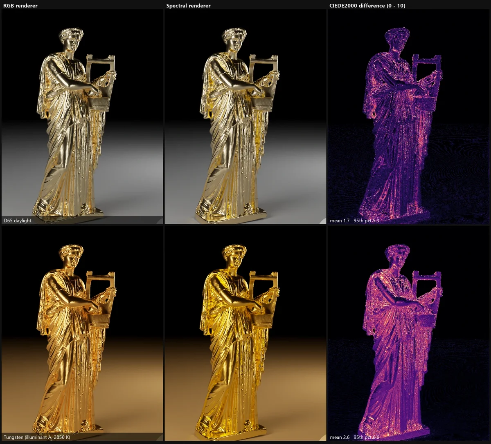

Model: Erato by Geoffrey Marchal (© 2016, CC BY 4.0). A 3D scan of a marble statue from Monte Calvo (2nd century AD, Ny Carlsberg Glyptotek collection). From Morgan McGuire's Computer Graphics Archive. Modifications: scaling and placement, recomputed vertex normals, gold material applied.
GoLD_rayt
A homemade 3D renderer that calculates light wavelength by wavelength, and sets the look of materials by number
In my graduation research, I measured gold with a spectroradiometer and quantified how much its color differs between calculating wavelength by wavelength (spectral) and calculating with the three colors of RGB. I started this renderer to repeat that study in my own code, and I keep building it toward pictures that look closer to how people see.
- Drawing a gold statue with both methods gives an average color difference of 1.7 in daylight and 2.6 under an incandescent bulb (a difference of about 1 is just visible, and 2 to 3 is clearly different)
- An sRGB display can hide this difference, but only when the RGB renderer also works in sRGB. Once the image is white balanced, as a photograph would be, the difference under candlelight grows about fourfold (color difference 14) and no display hides it
- It also simulates the camera: lenses with the glasses of their original patents, exposure set by f-number, shutter time and ISO, sensor noise, and raw (DNG) output. A common raw library (LibRaw) develops the DNG to within 1% of the renderer's colors
- Cross-checked against Mitsuba 3 on 23 scenes, it agrees within the noise; the check found a bug (rough glass about 0.5% too bright), which I fixed. Materials include metals, glass, translucency, skin and hair, as well as measured BRDFs, fluorescence and the glints of metallic paint (implemented from a 2025 paper)